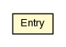

pt.ist.fenixframework.txintrospector
Class TxIntrospector.Entry

java.lang.Object
 pt.ist.fenixframework.txintrospector.TxIntrospector.Entry
pt.ist.fenixframework.txintrospector.TxIntrospector.Entry
- Enclosing interface:
- TxIntrospector
public static class TxIntrospector.Entry
- extends Object
Used to represent a read or write-set entry.
| Methods inherited from class java.lang.Object |
clone, equals, finalize, getClass, hashCode, notify, notifyAll, toString, wait, wait, wait |
object
public final DomainObject object
attribute
public final String attribute
value
public final Object value
TxIntrospector.Entry
public TxIntrospector.Entry(DomainObject object,
String attribute,
Object value)
Copyright © 2013. All Rights Reserved.